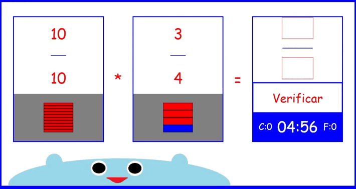
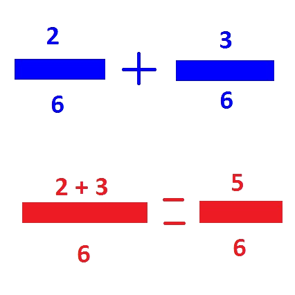
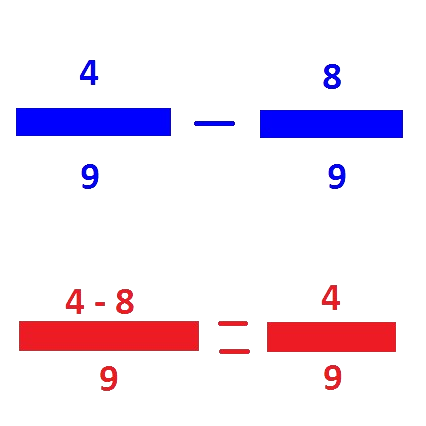
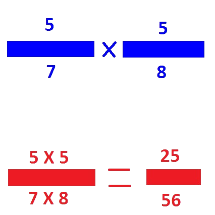

ahora vamos a contar cuantos pasteles sobraron despues de la venta que tuvimos anteriormente
pero para hacerlo mas facil voy a escoger dos pasteles del mismo tipo para obtener un pastel mas grande y mas ordenado y tambien quitar los que se pudrieron
Para eso necesito que sepas sobre las operaciones con fracciones, puedes usar mi libro si tu quieres
CONSEJOS
solo piensa que es una operacion normal

La suma de fracciones con el mismo denominador o también conocida como suma de fracciones homogéneas es el procedimiento más simplificado y sencillo, ya que el proceso de la suma se basa en sumar los numeradores y el denominador se mantiene igual.

La resta de fracciones con el mismo denominador o también conocida como resta de fracciones homogéneas es el procedimiento más simplificado y sencillo, ya que el procedimiento de la resta se basa en restar los numeradores y el denominador se mantiene igual.

Cuando se multiplican fracciones, se empieza por las dos fracciones que se quieren multiplicar. Se multiplican los numeradores (los números de arriba) juntos, y luego se multiplican los denominadores (los números de abajo) juntos.

Para dividir fracciones, se puede multiplicar la primera fracción por el recíproco de la segunda, o usar el método de los productos cruzados.